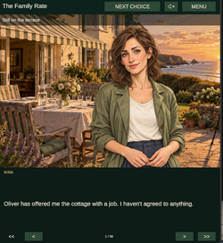
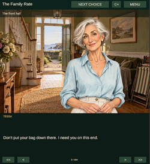
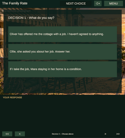

The Family RateFamily loyalty. Money. Things left unsaid.
A family birthday. A house being sold. An offer that could change whose home it is.
Play The Family Rate on itch.io ↗Free browser preview · 2 decision points · 9 opening paths

About The Family Rate
The Family Rate is an interactive visual novel about family loyalty, money, and the things people leave unsaid. Play as Nina Mercer, returning to her family’s coastal home for her mother’s seventieth birthday—and stepping into conversations where even a well-meant answer can change everything.
This early preview currently includes just two decision points, with three options at each, leading to nine different paths through the opening story.
More scenes and choices will be added if players show interest. Try different responses, meet the characters, and leave a comment telling us whether you’d like the story to continue!
A glimpse inside the story

